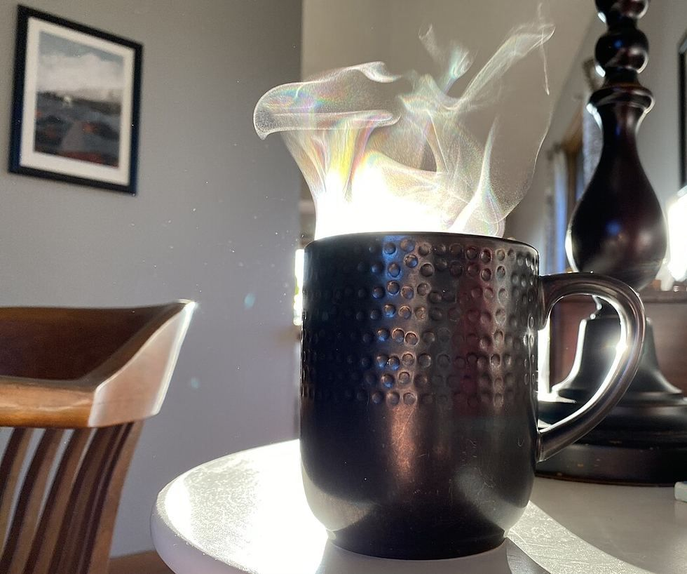

ABOUTお店のこと
神戸で働いていた店主が、休日に訪れたカフェの素敵な空間に心を動かされ、「こんな癒し空間を自分でも届けたい」という思いから、2023年3月に米子で開いた喫茶です。(紹介記事より)
米子駅前通り沿いの建物の2階にあり、薬局の脇の階段をのぼって入ります。店内は紺色のタイルが印象的で、窓際のテーブル席とカウンター席があるそうです。音楽や内装にもこだわった、ひとりでも入りやすい空間と紹介されています。
店名の意味は確認できていません。ここでは「急がず、気ままに」という制作側のイメージで、全体の雰囲気を組み立てています。

MENUメニュー
紹介記事では、コーヒーやクリームソーダなどのドリンクを中心に、トーストやプリンなどのスイーツ、軽食が挙げられています。内容や価格は変わることがあるため、ここでは詳細を準備中としています。

コーヒー
豆の香りを楽しむ一杯。価格: 準備中

お茶・ドリンク
色を選べるクリームソーダも知られているようです。価格: 準備中

軽食・スイーツ
トーストやプリンなど。価格: 準備中


写真はお店のものではなく、イメージ用のフリー素材です。
VOICE口コミ(イメージ例)
イメージ例
階段をのぼると、ふっと静かな空気に変わりました。窓際の席で、ゆっくりコーヒーをいただけました。
※制作側の創作で、実在の声ではありませんイメージ例
ひとりでも入りやすくて、カウンターで本を読みながら過ごしました。流れる音楽も心地よかったです。
※制作側の創作で、実在の声ではありませんイメージ例
おやつの時間に立ち寄って、甘いものと温かい飲みものでひと息つけました。また行きたいです。
※制作側の創作で、実在の声ではありませんACCESSアクセス
| 所在地 | 〒683-0067 鳥取県米子市東町193 |
|---|---|
| 電話 | 準備中 |
| 営業時間 | 準備中 |
| 定休日 | 準備中 |
| 駐車場 | 準備中 |
| @easyflow_2023(臨時休業などのお知らせもこちらで) |